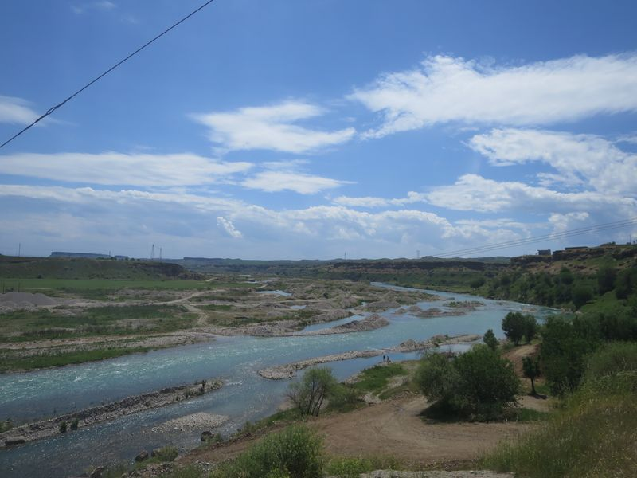

Van
因為要趕八點半去到 octogar，一早起身，出去搵食，响一間地道店飲湯食麵包，湯加入香料辣油同檸檬汁，睇住當地人點食，係將麵包整碎，混入湯中攪拌然後一齊食。
然後又去咗對面間茶舖度飲茶，舖頭裏面有部電視，估唔到响度睇咗一個好好正嘅 MV。係卡通嚟，故事主要係講一個女人好窮，要打好多份工，每日搭同一架車，識咗個司機，然後行埋一齊，但女人之後做咗明星，佢哋冇再一齊，個司機成日見佢上電視，諗返起以前啲事，去以前成日去嘅地方，MV 最後個女人响嗰度再出現同佢再遇咁上下。
去到 octogar，巴士九點幾到達，係小巴，又會咁嘅。由呢度開始嘅長途巴，我終於遇到 security check，查行李查護照，問我去邊。
Mardin 北面就係 Diyarbakır，我唔知道小巴有冇經過，睇地圖係唔使經過嘅。到底而家 Diyarbakır 嘅情況係點嘅呢，係咪真係唔去得？不過就算可以入去，Mustafa 話我响裏面都冇地方可以參觀架喇，所以去嚟係冇意思。
今日全日都係坐小巴，下晝五點至去到 Van。但時間過得好快，而且覺得遊車河好舒服，又可以睇風景。之前我仲以為自己已經頂唔順坐長途巴士添。
一啲乘客响一個 octogar 轉去另一架大巴士，係去 Agir 嘅，原本坐我隔蘺嘅人就係其中一個，不過之後我哋嘅巴士响一啲 octogar 都同時停低休息，再次遇上然後傾偈。
有一個 octogar 停得耐好多，站裏面有檔賣糖果嘅，話時話 Mardin 亦有好多糖果舖。糖果檔嘅人叫我坐底，然後好多人走嚟用手機自拍，很開心地講 selfie~。
呢個 octogar 仲有我响土耳其飲過最平嘅鮮橙汁，1 TL，仲要係一大杯，見佢都用咗成四五個橙！真係估唔到。
沿路嘅風景真係好鬼靚，河、山、遠處嘅雪山、冰川、草原、牛羊，感覺去咗嗰啲飄零燕嘅地方，過咗 Tatvan 就係沿住 Lake Van 南岸一直去到 Van，因為冇時間，冇留多一日响 Van，所以亦冇打算去 Lake Van 同埋附近地區，咁而家一路睇住個湖，又見到湖中小島嘅教堂，都心滿意足。
到達 Van 嘅 octogar，買埋聽日去 Kars 嘅車飛，又係只有日車，再問問由 Kars 去 Trabzon 嘅車，有上晝九點半同下晝十二時半兩個班次。搭 15 TL taxi 去市中心嘅 Hotel Bahar，35 TL 一晚，正，wifi 和熱水花灑良好，土耳其嘅住宿無論高低級，熱水花灑都唔衰得去邊。
又係用唔夠三個鐘時間去行，Vans，好涼快，還有啲凍，意料之外嘅係呢個城市好旺，主要街道一路行，好多人同店舖，就好似之前 Denizli 咁興旺呢，仲有唔少 cafe 添。响一間好多當地人幫襯嘅食店吃晚餐，叫咗 pide，但係比起之前 Göreme 食嘅 pdie，就遜得多。




 Armenian Holy Cross Church (好似係)
Armenian Holy Cross Church (好似係)
 Van
Van